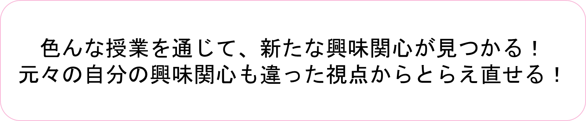

文化総合学科プログラム
開催日: 2026年 9月 12日（土） 10:00 〜 12:30
本日のスケジュール
お手元のデバイスで見られます

文化総合学科とは？
高校で学ぶ社会科系科目の内容を発展的、かつ広範に学ぶことができます。
- 異文化コミュニケーション論
- 国際関係論
- 法学
- 心理学
- 西洋史
- 日本史
- 哲学
- 倫理学
日常の疑問・教科書の一文を深く掘り下げる！
💡 クレオパトラはどうしてアントニウスと協力したのだろう？
💡 織田信長はどうして、どんな風にキリスト教を保護したのだろう？
💡 江戸時代や明治時代の女性はどのような一生を過ごしていたのだろう？
💡 LGBTの幸福のために、法律や制度には何が求められるのだろう？
💡 動物の命の尊重と肉食文化は両立するのだろうか？
💡 日本に住む外国人とどのように接していくべきなのだろう？
💡 どんなきっかけで私たちの幸福感や安心感は変わってくるのだろう？
💡 韓国の政治や文化を私たちはどう理解しているのだろう？
2専修の有機的な結びつき
現代社会専修
現代における多様な社会と文化をアプローチ
歴史・思想専修
多様な社会と文化の背景や基盤をアプローチ
多種多様な人間社会の在りようとその背景の学び
幅広い学問分野に触れつつ、専門的な知識や思考を深めていく！
現代社会専修
（異文化コミュニケーション論・国際関係論・法学・心理学）
■ 多面的な学び: 現代の多様な社会と文化について多面的に学びます。
■ 感性と構想力: 社会的課題を発見する鋭い感性と、問題解決に必要な道筋を創造的に構想する力が身につきます。
■ 実践的対応力: 文献の収集や分析スキルのほか、フィールドワークやアンケート手法、調査結果の報告に必要なコミュニケーション能力といった、卒業後のキャリアにも活かせる実践的対応力を磨くことができます。
歴史・思想専修
（西洋史・日本史［古代・中世／近世・近代］・哲学・倫理学）
■ 人類の歩みと根本思考: 人類の歩んできた歴史や、人間存在の根本について深く考察します。
■ 知的文化遺産の理解: 文献・資料・史料の収集・分析・精読を通して過去の人類の知的文化遺産を理解できるようになります。
■ 多角的な視野: 現代においてますます求められる、様々な事象を多角的に見る能力や深い思考力が身につきます。
「総合的」・「学際的」に学ぶ
- 各専修の専門分野を探求しつつ、違った視点を持つこともできます。
- 様々な課題に対して「学際的」に思考できる力が身につきます。
文化総合学科は「学びの図書館」
‐各専修に隣接した多様な科目群‐
専任教員の講義とは別に、各専修に隣接する多様な学問分野に触れることで視野を広げ、専門的・総合的な学びを深めることができます。

段階的・発展的な積み上げ
幅広く教養を身につけられるとともに、興味を持った分野を迷子になることなく深く探求できます。
1年次（基盤形成）
- 基盤科目
- 入門科目
2〜3年次（基礎・発展）
- 特講科目
- 演習科目
4年次（完成）
- 卒研演習
- 卒業研究
4年間を通しての演習指導
円滑な学びへの移行と、継続的で手厚いサポート体制が整っています。
大学での学びの基本スキルをしっかり習得
専門の深化と諸領域の総合的探求
集大成としての卒業研究を作成
大学生活を彩る多様な活動
（これまでの主な活動実績）
- 札幌近代美術館 美術展鑑賞
- PMF（パシフィック・ミュージック・フェスティバル）鑑賞
- 野外彫刻の清掃ボランティア
- 文総カフェ in 大学祭
- Sapporo Short Fest（札幌国際短編映画祭）ボランティア
文化総合学科の入試制度一覧
| 入試区分 | 選抜方式・備考 | 試験日 / 出願期間 |
|---|---|---|
| 総合型選抜 | 課題レポート＋プレゼン＋面接（専願） | 10月24日（土） |
| 学校推薦型選抜 | 公募・姉妹校・カトリック校・指定校（面接） | 11月21日（土） |
| 社会人入学試験 | 小論文＋面接 | 11月21日（土） |
| 一般選抜入学試験 | 国語(100) + 外国語(100) + 地歴公民(100) | 2月13日（土） |
| 大学共通テスト利用 | A日程：400点満点 / B日程：300点満点 | 1月 / 2月下旬〜3月 |
① 総合型選抜 & ② 学校推薦型選抜
出願資格: 専願
- 課題レポート（1200字程度）に基づくプレゼンテーション（10分程度）
- 面接（20分程度）
区分: 公募、姉妹校、カトリック校・女子校、指定校
出願資格: 専願（公募評定3.4以上）
- 面接（資料として大学入学希望理由書と調査書を活用）
③ 社会人選抜 & ④ 一般選抜
- 小論文
- 面接（入学希望理由書を活用）
学力試験科目（計300点満点）:
- 国語（100点）
- 外国語［英語］（100点）
- 地歴・公民（100点）
⑤ 大学共通テスト利用入学試験
配点（合計400点満点）:
- 国語／数学／情報から1科目（100点）
- 外国語（100点）
- 地歴・公民（200点）
配点（合計300点満点）:
- 国語／外国語／数学／情報から1科目（100点）
- 地歴・公民（200点）
学生の雰囲気について
大学が少人数で教員と学生の距離が近く、とてもアットホームな環境です。全学で「アカデミックアドバイザー制度」を採用し、教員1人が1学年およそ8人程度の相談役を担当しています。1年次の「基礎演習」などでもフランクに相談できます。
入試編 FAQ
Q.1 入試方法について細かく知りたいです。
→ 【2】の入試説明でご紹介した通りです。詳細は学科カフェ（656教室）にお越しください！
Q.2 総合型選抜入試について
→ 次のスライドで詳しく解説します。
Q.3 スカラーシップ制度について
→ 2つ先のスライドで詳しく解説します。
Q.4 入学試験の勉強法
→ このあとの「文総まるわかり！」にて在学生がお答えします！
Q.2 総合型選抜について
具体的には、探究結果をまとめた①課題レポートと、面接の場で表現する②プレゼンテーションが重要になります。
📱 二次元コードから詳細チェック！
文化総合学科の「課題レポートサンプル」や詳しい入試情報をご覧いただけます。
Q.3 スカラーシップ制度について
対象区分の合格上位者（各学科募集人員の10％程度）を対象に、学費（授業料＋教育充実費）が免除されます。
〈対象区分〉 一般選抜 A日程 ／ 共通テスト利用 A日程
📱 スカラーシップ制度の詳細はこちら
二次元コードから詳細な免除要件をご確認いただけます。
キャリア（就職）編 FAQ
Q.1 文化総合学科を卒業後、どのような職種につく人が多いですか？
→ 次のスライドで就職実績・推移データを紹介します。
Q.2 社会科の教員になった人はいますか？
→ 2つ先のスライドで合格実績を解説します。
Q.3 大学4年間で高校社会と高校書道の教育免許を重複取得できますか？
→ 2つ先のスライドで回答します。
Q.1 卒業後の就職について
多様な学問分野を反映し、進路も多彩です！
（サービス、流通、銀行・保険会社、航空会社・空港スタッフ、テレビ局員・アナウンサー、公務員、学校教員、図書館員...）
| 年度 | 就職率(%)* |
|---|---|
| 2018 | 94.3 % |
| 2019 | 94.5 % |
| 2020 | 95.2 % |
| 2021 | 95.6 % |
| 2022 | 95.5 % |
| 2023 | 98.8 % |
| 2024 | 97.4 % |
教員採用 & 免許取得FAQ
・2026年3月卒業生: 教員免許取得者6名中、採用試験合格者2名（うち辞退1名）、臨時採用1名。
・2025年3月卒業生: 教員免許取得者8名中、合格者4名。臨時採用から今年度再度挑戦して見事合格した卒業生もいます。
文部科学省の「一学科一教科原則」により、文化総合学科では社会科系（中学社会、高校地歴、高校公民）の免許が取得可能です。（※書道は日本語日本文学科で取得可能）
その他 FAQ
Q.1 将来図書館司書になりたいのですが、どうすれば資格を取れますか？
→ 次のスライドで詳しく回答します。
Q.2 入学にあたりどのような勉強をしたら良いですか？
Q.3 高校在学中に勉強する他に必要なことはありますか？
Q.4 在校生に質問：藤女子大学を目指した理由は？
Q.1 図書館司書資格の取得について
📱 説明会資料
二次元コードから詳細な解説をご確認いただけます。
本日これからのご案内
- 10:30 〜 11:10 655教室 体験授業（勝西良典）
「へそ曲がり倫理屋さんのつぶやき②私、自己中で利己主義ですが何か!?」 - 11:20 〜 12:00 655教室 学生発表（学生＋平井上総）
「私の学びの集大成〜卒業論文に向けて」 - 12:00 〜 12:30 キャンパスツアー
（655教室前集合） - 10:00 〜 12:30 654教室
入試・学科相談コーナー（学生＋教員）
- 個別相談（2F iLearning Space）
就職・奨学金・入試 etc.